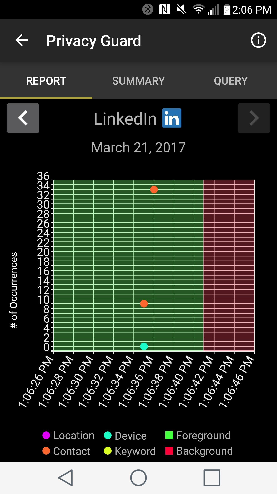
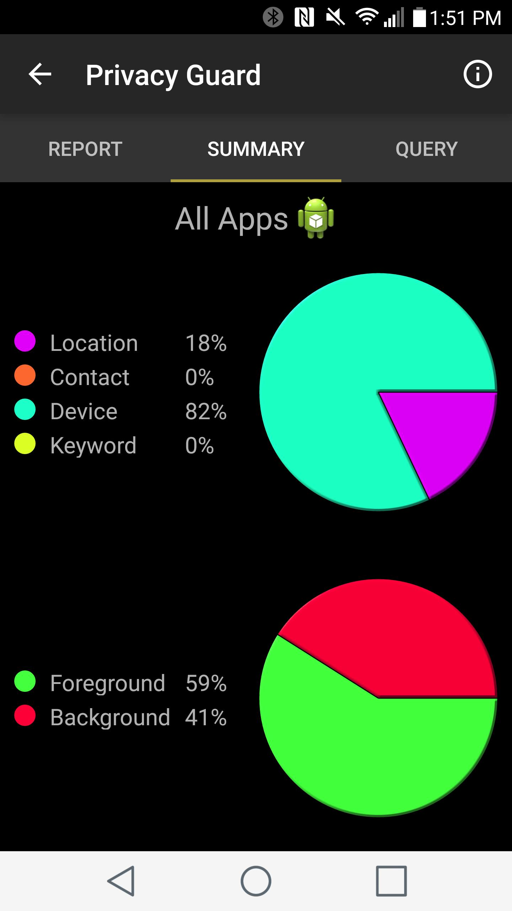
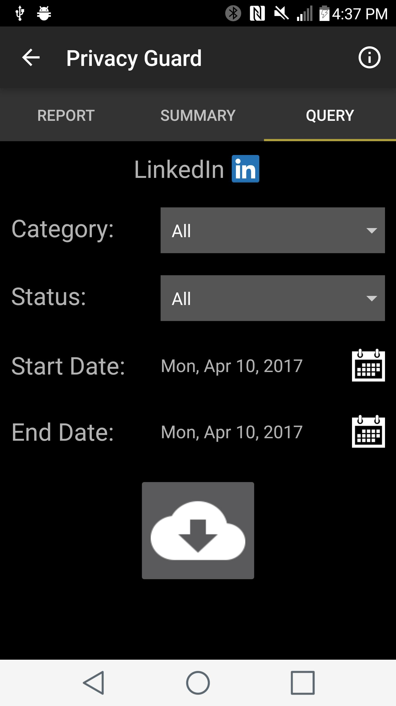
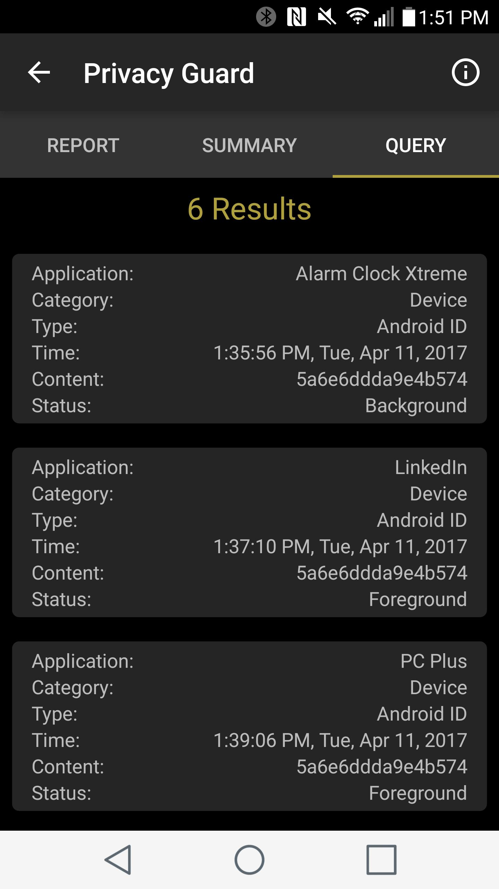

Undergraduate Research Assistant, Winter 2017
Faculty of Computer Science
University of Waterloo
As an Undergraduate Research Assistant in the Faculty of Computer Science, I used modern trends in Android programming and the library Android Plot to update and add user functionality to an Android app that analyses network traffic.
The app records leakage incidents: where an app sends sensitive user information across the network. I displayed this data graphically along with app foreground/background events that Android automatically records. Thus, I was able to categorise leaks as having occurred in the app foreground or not. I displayed pie charts summarising leaks by category and foreground status, and gave the user a UI to define custom queries on the in-app SQLite database.
View URA Final Report



